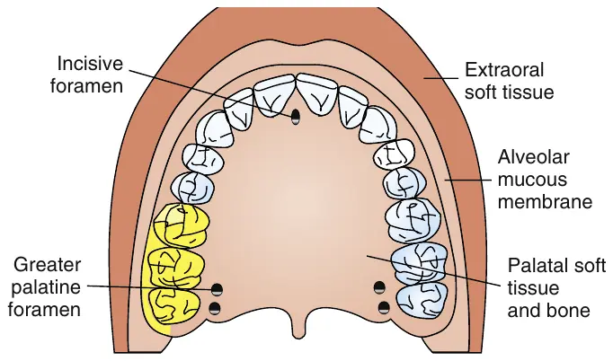
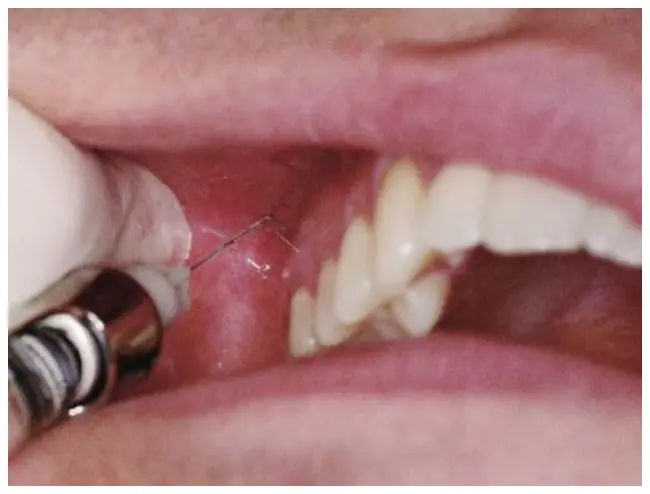

نسخه استخراجشده؛ ترجمه یا تأیید علمی انجام نشده است. وضعیت: captured
آقایی ۴۰ ساله برای ترمیم مولر اول و دوم و سوم بالا در یک جلسه آمده است. میتوانی سه اینفیلتراسیون جدا بزنی یا یک تزریق. کدام را انتخاب میکنی و چرا؟

بلاک عصب آلوئولار فوقانی خلفی (PSA) که به آن tuberosity block هم میگویند، عصب PSA را پشت توبروزیته، پیش از ورود به استخوان، بیحس میکند.
مزیتها: موفقیت بیش از ۹۵٪، یک تزریق بهجای سه، و حجم کمتر؛ همان سه اینفیلتراسیون روی هم ۱٫۸ میلیلیتر میشود. درست زده شود بیدرد است، چون سوزن به استخوان نمیخورد و فضای بافتی بزرگ است.
عیبها: خطر هماتوم، نبود لندمارک استخوانی هنگام ورود سوزن، و آسپیراسیون مثبت حدود ۳٫۱٪. در بیمار با اختلال انعقادی یا مصرف داروهای ضدانعقاد و ضدپلاکت، اینفیلتراسیون یا تزریق PDL را جایگزین کن.
سوزن: کوتاه، گیج ۲۷. نقطهی ورود: عمق وستیبول بالای مولر دوم. لندمارکها: توبروزیته و زائدهی زایگوماتیک.

اگر سوزن به استخوان خورد، زاویهی رو به داخل زیاد است: کمی عقب بکش، سرنگ را به صفحهی اکلوزال نزدیکتر کن و دوباره جلو برو. بیحسی زبان یا لب پایین یعنی محلول زیادی خارجی نشسته و به شاخهی مندیبولار رسیده.
بیمار معمولاً بیحسی را حس نمیکند؛ پالپ را با اسپری سرما یا EPT بسنج.